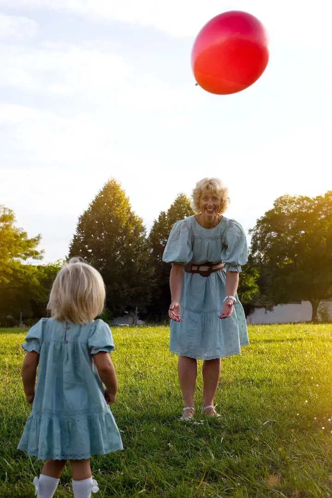
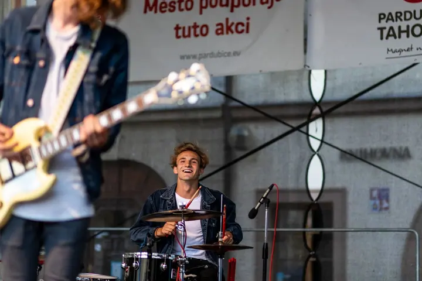

jedna
Svatby
Vyberete si z mini, středního nebo velkého balíčku: od obřadu a párových fotek až po celý den včetně příprav a prvního tance. Mini balíček začíná na 6 000 Kč.

Svatební a rodinná fotografka · Pardubice, celá Česká republika

Jmenuji se Anna Adamů a focení mě naplňuje už přes 10 let. Fotím svatby, rodiny i páry v Pardubicích a kdekoli po Česku. Ráda vymýšlím originální snímky, ke kterým se budete vracet ještě za spoustu let.
Více o mně
Co fotím
jedna
Vyberete si z mini, středního nebo velkého balíčku: od obřadu a párových fotek až po celý den včetně příprav a prvního tance. Mini balíček začíná na 6 000 Kč.
dvě
Fotíme venku nebo u vás doma, s dětmi, prarodiči i nejmenšími členy rodiny. Snažím se vymýšlet originální snímky, které vám zůstanou jako vzpomínka na spoustu let.
tři
Párové focení trvá 30 až 60 minut v exteriéru nebo u vás doma a stojí 2 000 Kč. Portréty jednotlivce fotím za 1 500 Kč.
Fotím koncerty, festivaly a firemní akce, od roku 2018 například pardubické Zrcadlo umění. Cena je 250 Kč za hodinu na akci a 3 000 Kč za úpravu.
Fotky, ke kterým se budete vracet roky.


Za objektivem
Focení je můj celoživotní koníček. Vystudovala jsem střední fotografickou školu, která mi dala základy a hodně praxe. Snažím se ale pořád posouvat dál a zkoušet nové postupy.
Profesionálně fotím svatby, rodiny, páry i jednotlivce. Od roku 2018 fotím pardubickou akci Zrcadlo umění a mám za sebou i produktové focení pro firmu Petrof pianos.
Kromě fotografie se věnuji grafickému designu a správě sociálních sítí pro firmy. Natáčím a stříhám videa a připravuji letáky, bannery i příspěvky. Pokud se vám moje tvorba líbí, nebojte se mi napsat, těším se na spolupráci.
Anna
Napíšete mi nebo zavoláte a probereme, co si představujete. Komunikace je vždy součástí ceny.
Vybereme balíček a místo, venku, u vás doma nebo na místě svatby. Z Pardubic přijedu kamkoli po republice.
Na focení si v klidu užijete čas spolu, já se postarám o zbytek a budu vymýšlet originální záběry.
Fotky upravím, drobně vyretušuji a pošlu je ve třech odkazech: online galerie s heslem, fotky k tisku a menší verze do telefonu.
Portfolio
Otázky
Posílám vždy všechny fotky, které se povedou. Počet snímků za danou cenu nijak neomezuji.
Ve třech odkazech: online galerie zabezpečená heslem, kterou můžete sdílet s rodinou, fotky ve vyšším rozlišení k tisku a fotky v menším rozlišení do telefonu nebo počítače.
Ano, fotím po celé České republice. Doprava z Pardubic stojí 300 Kč do 100 km, 500 Kč do 200 km a 700 Kč nad 200 km tam i zpět.
Mini balíček (obřad, páry, rodina, max. 3 hodiny) stojí 6 000 Kč, střední (max. 5 hodin) 9 000 Kč a velký na celý den (9 až 12 hodin) 15 000 Kč. Každá další započatá hodina je za 1 000 Kč.